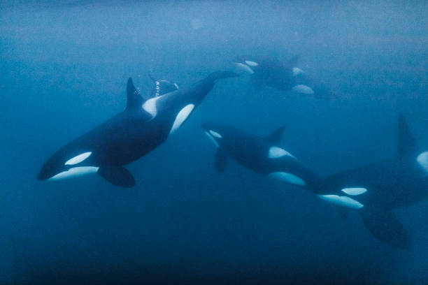

Orcas in the Ecosystem
Orcas live in various marine ecosystems but they prefer cooler temperatures and polar regions. Orcas are apex predators and play a crucial role in their ecosystems. They balance the marine food webs in numerous ways. Since orcas are apex predators they help regulate prey populations and prevent the overpopulation of certains species. Unfortunately there's been a decline in their population. Looking specifically at the Southern Resident orcas, which primarily inhabit the coastal waters of the Pacific Northwest, have seen a decline from a peak of 98 in 1995 to 73 in 2024. This significant decline led to this population being listed as federally endangered.
Threats to Orcas
Pollution
Orcas are affected by pollution through the accumulation of toxic chemicals in their bodies and ingestion of plastic and marine debris.
Decline in Food Supply
The decline in food supply threatens orcas survival by leading to malnutrition and reduced reproductive success.
Climate Change
Climate change affects orcas by altering ocean temperatures and ecosystems, which can disrupt their food sources and migration patterns.
Entanglement
Entanglement in fishing gear and other debris can cause serious injuries or even death for orcas, making it a significant threat to their survival.